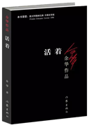

李君|个人网站
首页|Home
个人简历|Resume
生活点滴|Life
读书日记|Reading
电影推荐|Movies
留言板|Message

《活着》
作者：余华
《活着》讲述了大时代背景下，在内战、三反五反、大跃进、文化大革命等一系列社会变革下，饱经磨难的福贵的一生。 读过这本书我们会明白“人是为活着本身而活着的，而不是为了活着之外的任何事物所活着。”
《围城》
作者：钱钟书
《围城》是中国现代文学史上一部风格独特的讽刺小说，被誉为“新儒林外史”。作品包含多层意蕴， 淋漓尽致地讽刺了近代知识分子。书中写到，“结婚仿佛金漆的鸟笼，笼子外面的鸟想住进去，笼内的鸟想飞出来；所以结 而离，离而结，没有了局。” 书中的“围城”困境是贯穿于人生各个层次的。
《白鹿原》
作者：陈忠实
该小说以陕西关中地区白鹿原上白鹿村为缩影，通过讲述白姓和鹿姓两大家族祖孙三代的恩怨纷争， 表现了从清朝末年到二十世纪七八十年代长达半个多世纪的历史变化。小说的寻根主题主要是精神和心灵的寻根， 带着对精神中“真”的追求写出儒家文化的精髓。
《草房子》
作者：曹文轩
《草房子》讲述了发生在20世纪60年代初江南水乡一个动人动情的童年故事，讲述了五个孩子和油麻地的老师蒋一轮、 白雀关系的纠缠和孩子们痛苦的成长历程。书中饱含优美意境和悲悯情怀，描绘了一幅人与自然和谐共生的美丽画面。
《老人与海》
作者：海明威（美）
小说讲述了一位老年古巴渔夫与一条巨大的马林鱼在离岸很远的湾流中搏斗的故事。人可以失败，但不可以被击败， 这也是书中体现的人类不向命运低头，永不服输的斗士精神和积极向上的乐观人生态度。
《红楼梦》
作者：曹雪芹
《红楼梦》是中国古代章回体长篇小说，中国古典四大名著之一。小说以贾、史、王、薛四大家族的兴衰为背景， 以贾宝玉与林黛玉、薛宝钗的爱情婚姻悲剧为主线，描绘了一批举止见识出于须眉之上的闺阁佳人的人生百态，展现了真正的人性美和悲剧美， 可以说是一部从各个角度展现女性美以及中国古代社会世态百相的史诗性著作。
《小王子》
作者：安托万·德·圣-埃克苏佩里（法）
《小王子》是法国著名儿童文学短篇小说。书中讲述了小王子从自己星球出发前往地球的过程中，所经历的各种历险。 作者以小王子的孩子式的眼光，透视出成人的空虚、盲目和愚妄，用浅显天真的语言写出了人类的孤独。同时，也表达出作者对金钱关系的批判， 对真善美的讴歌。
《倾城之恋》
作者：张爱玲
《倾城之恋》是张爱玲最脍炙人口的短篇小说之一。是一篇探讨爱情、婚姻和人性在战乱及其前后，怎样生存和挣扎的作品。 小说的结局看似圆满，实则浸透着胡琴、月、蚊香、镜、空房等这些颇具悲剧意蕴的意象。作者正是想通过小说表达独立、自由的爱情观。
《骆驼祥子》
作者：老舍
《骆驼祥子》讲述的是20世纪20年代军阀混战时期中国北平城里的一个年轻好强、充满生命活力的人力车夫祥子三起三落 的人生经历。祥子是旧社会劳苦大众的代表人物，小说揭示了半殖民地、半封建的中国社会底层劳苦大众的悲苦命运。
《傲慢与偏见》
作者：简·奥斯汀（英）
小说描写了小乡绅班纳特二女儿伊丽莎白和达西的爱情故事。作品以日常生活为素材，一反当时社会上流行的感伤小说的 内容和矫揉造作的写作方法，生动地反映了18世纪末到19世纪初处于保守和闭塞状态下的英国乡镇生活和世态人情。